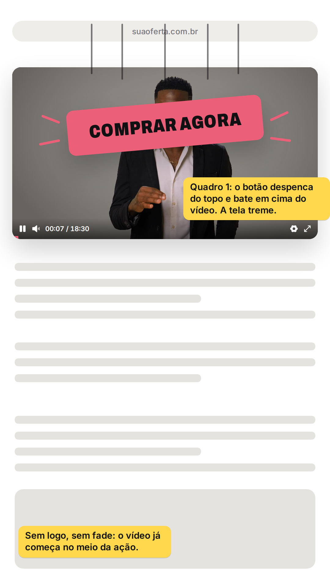
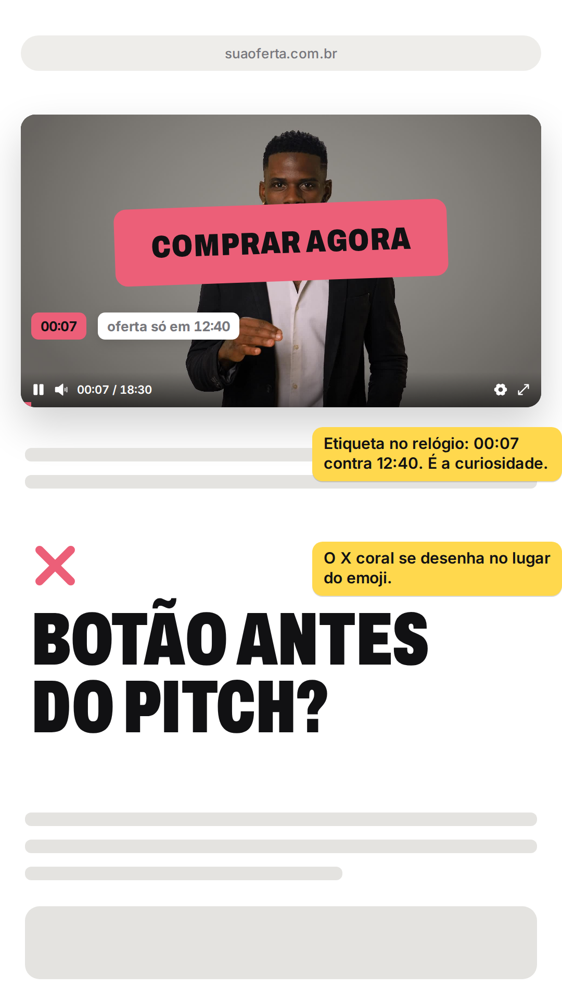
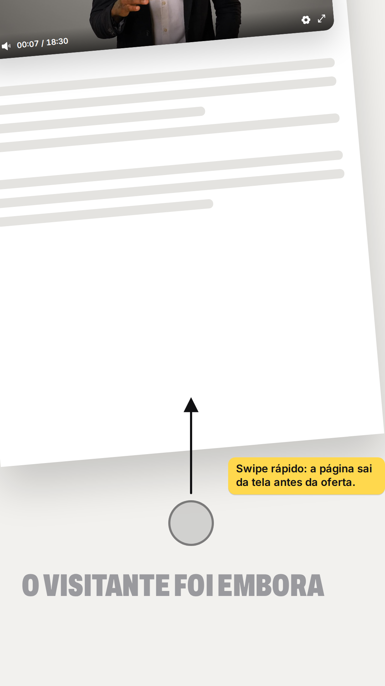
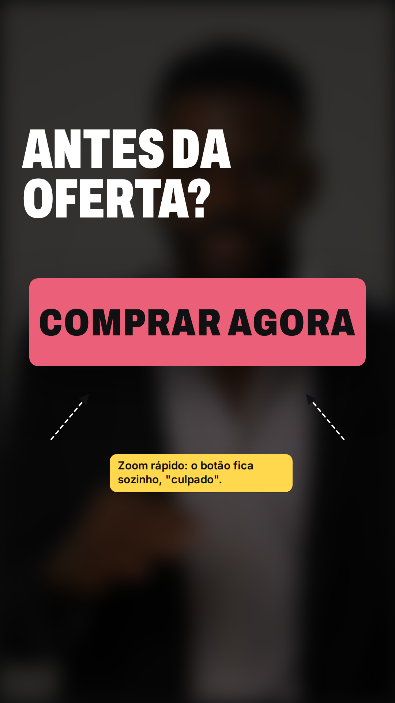
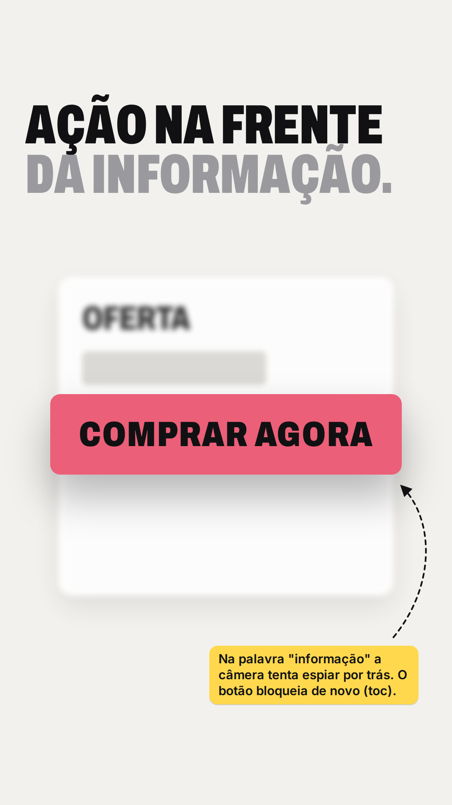
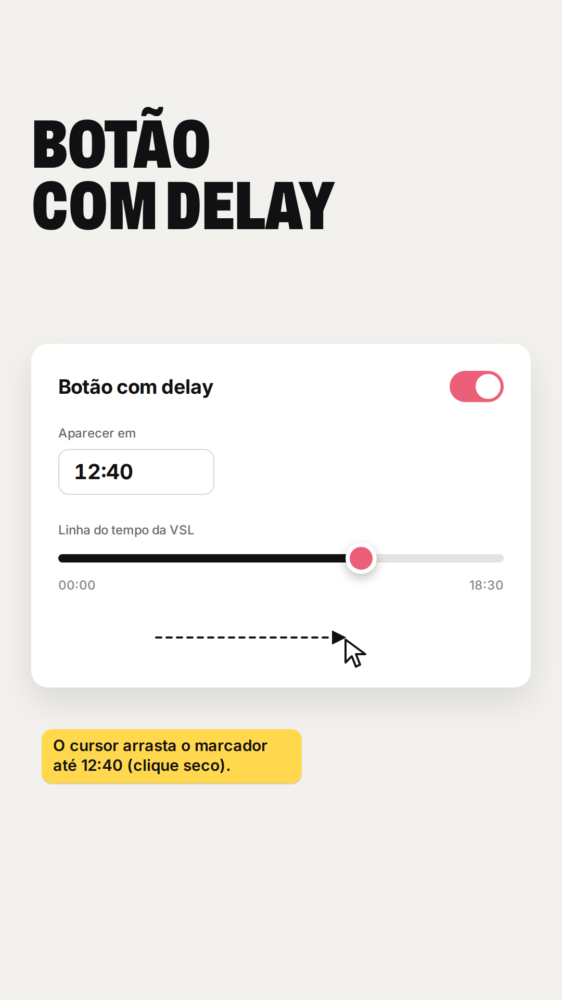

Parte 1 de 2 · cerca de 37 s · vertical 9:16 · o botão que chega cedo demais é o vilão; o VSLPLAY coloca ele no segundo certo

01 · 0,0 s Gancho
O botão de compra despenca em cima da VSL e a tela treme.
"Seu botão de compra…"

02 · 0,4 s Gancho
Etiquetas 00:07 e "oferta só em 12:40". Pergunta na tela.
"aparece antes…"

03 · 1,5 s Gancho
O visitante rola e a página sai da tela.
"da sua VSL…"

04 · 2,5 s Gancho
Zoom no botão, sozinho, "culpado".
"apresentar a oferta?"

05 · 0:05 Cena 2
O botão fica na frente da oferta, que ainda está se montando.
"uma ação na frente de uma informação…"

06 · 0:11 Cena 3 · virada
Painel do VSLPLAY: o marcador é arrastado até 12:40.
"Com VSL Play, você configura o botão com delay…"